Images of the Russian Empire
En Hsin HOW | ID: 3043225474
Colorizing Sergei Prokudin-Gorskii's negatives by splitting each scan into its blue, green, and red exposures and searching for the (x, y) shift that lines them back up into a single color photo.
Overview
Each scan is a set of grayscale images stacked as three exposures: blue on top, green in the middle, and red on the bottom. They were taken through different color filters moments apart. Simply stacking the three slices directly produces a misaligned image, since each exposure was captured at a slightly different position and the scans also have rotational and cropping inconsistencies. The goal here is to recover the (x, y) translation that aligns green and red to blue, which is fixed, for every image in the set.
Metrics
To score a candidate shift, I compare the shifted channel against the reference (blue) channel with one of two metrics, all computed on the interior of the image only — the outer 6% is cropped out before scoring, since the border of each scan usually has inconsistencies like dark spots or folded edges, which pollutes the score.
L2 (sum of squared differences / Euclidean distance)
$$L_2 = \sqrt{\sum_{x,y} \big(I_1(x,y) - I_2(x,y)\big)^2}$$
Subtract corresponding pixels, square the differences, sum them
up, then square root it. Squaring makes large mismatches count
disproportionately more than small ones, which means it is more
sensitive to outliers, which is good for precise alignment. But,
this can also be a problem when two channels genuinely differ in
exposure or brightness rather than just being shifted (such as emir.tif).
NCC (normalized cross-correlation)
$$\text{NCC} = \frac{I_1 - \overline{I_1}}{\lVert I_1 - \overline{I_1} \rVert} \cdot \frac{I_2 - \overline{I_2}}{\lVert I_2 - \overline{I_2} \rVert}$$ Each image is mean-centered and scaled to unit norm before comparing, which removes each channel's own brightness and contrast from the comparison. What's left is a measure of whether the two images' bright/dark patterns line up, which makes NCC more robust to channels that were exposed very differently.
Part 1 — Single-scale alignment
For the low-resolution JPEGs, an exhaustive search over every (dx, dy) in [-15, 15] is cheap enough to run directly on the full image, hence no pyramid needed. Below are the problems faced for this part, and the results for the three baseline images.
Problems encountered
Initial results for Cathedral
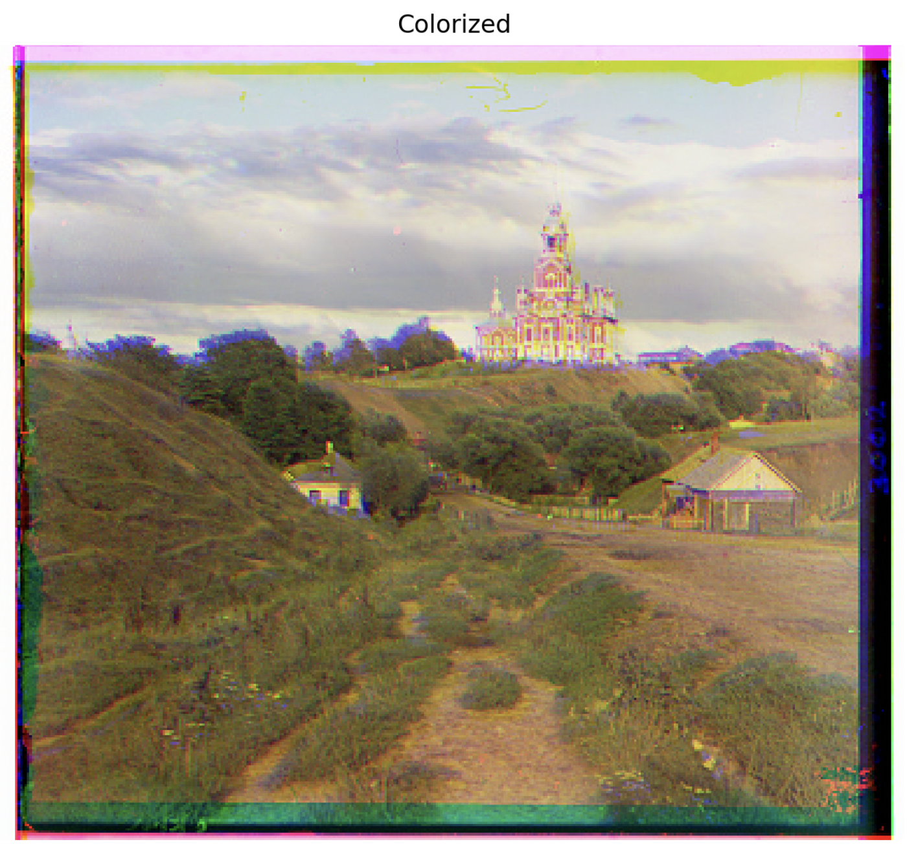
My initial align function used the full image, which gave a poor alignment as the original three plates (B, G, R) were not captured with the same framing. To resolve this, I added a
crop_image function to crop a fixed margin off the
sides (the fringes) and only using the align function on the
central part of the photo should give a better alignment.<- Click the image to zoom in on the misalignment
Final results
I found that cropping 6% of the borders was most effective, hence
applied before scoring, which improved the alignment results. I
then applied this to all three jpgs under both metrics.
click to show
crop_image() codedef crop_image(image):
margin_h = int(0.06 * image.shape[0])
margin_w = int(0.06 * image.shape[1])
return image[margin_h:-margin_h, margin_w:-margin_w]
Cathedral

G shift: (2, 5); R shift: (3, 12)
Monastery

G shift: (2, -3); R shift: (2, 3)
Tobolsk

G shift: (3, 3); R shift: (3, 6)
Part 2 — Multi-scale pyramid alignment
The full-resolution .tif scans are too large for a ±15 pixel
exhaustive search. It will require a much larger range/take
too long as the pixel displacements can be in the hundreds.
Instead, I recursively downscaled each channel by half
until it's small enough (under 100px tall) to brute-force
directly, then call align(). As I work back up,
I start with doubling the shift at each level, which is used
as a starting estimate, then I refine this with a small local
search (±5) around that estimate. This turns an expensive
global search into a cheap coarse estimate plus a handful of
cheap local refinements, even smaller than align().
Problems encountered [Bells & Whistles]
Initial results for emir.tif
Upon testing, there were still some edges that were not fully aligned.
In the case of emir.tif, the misalignment was very large and obvious.
This is because The B, G, and R values for this photo differ
substantially in exposure and contrast, most visibly in the
robe and skin tones. The raw-pixel metric fixes on the brightness mismatches
instead of true structural alignment, producing a large,
clearly wrong shift (the red channel in particular ends up
offset by tens of pixels, visible as thick solid color bands
rather than soft fringing).
Hence I tried to compute a Sobel gradient-magnitude
map for each channel first, (with a clue from the bells &
whistles section) to identify an edgemap.
$$E(x, y) = \sqrt{(\partial I/\partial x)^2 + (\partial I/\partial y)^2}$$
This works because an edge exists in roughly the same place regardless of how brightness, which sidesteps the brightness-mismatch problem directly rather than just softening its effect. The shift found on the edge maps is then applied to the original, un-processed channels to build the final image.
Before (raw NCC)
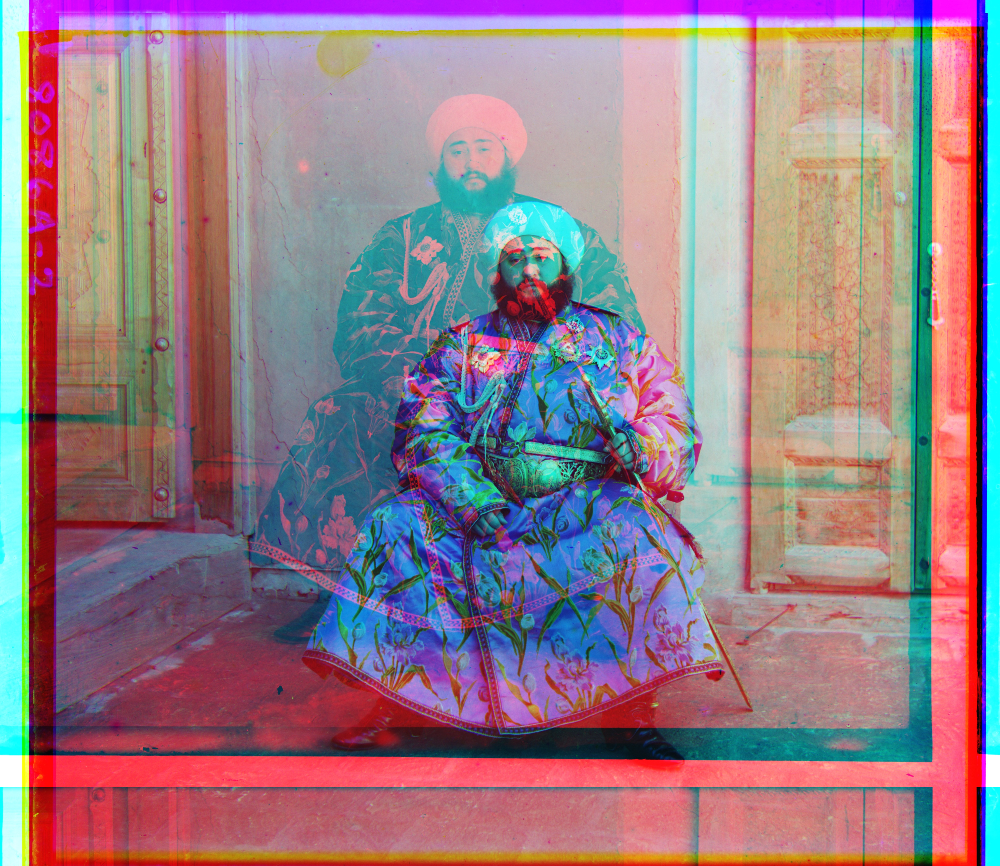
G shift: (24, 49); R shift: (-171, -293)
After (edge-based NCC)
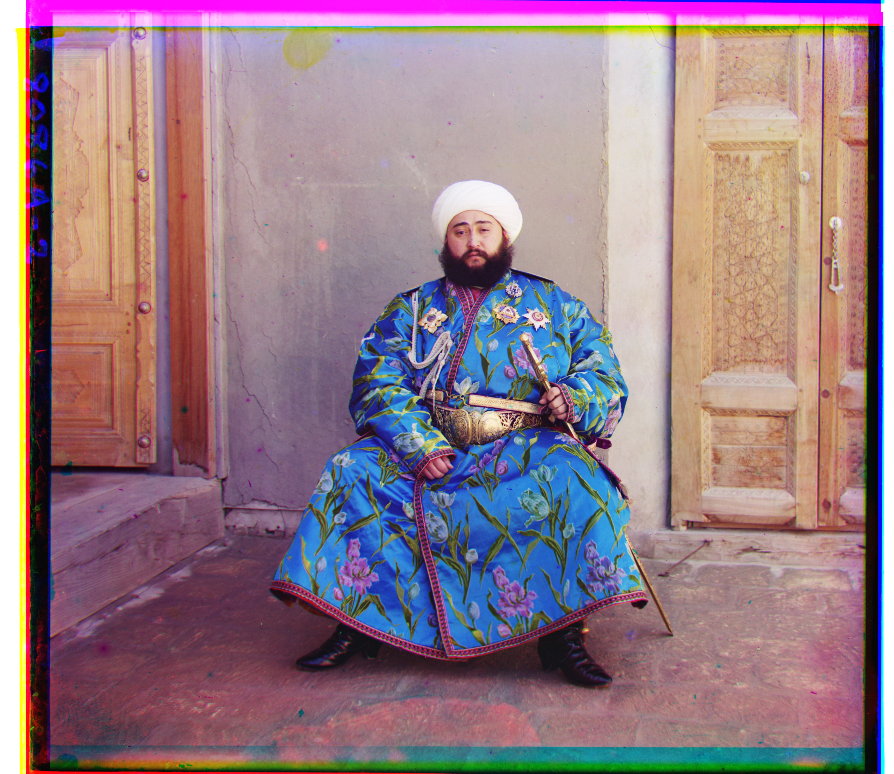
G shift: (24, 49); R shift: (40, 107)
click to show edgemap code
def edge_map(image):
gx = cv.Sobel(image, cv.CV_64F, 1, 0, ksize=3)
gy = cv.Sobel(image, cv.CV_64F, 0, 1, ksize=3)
return np.sqrt(gx**2 + gy**2)
b_edge = edge_map(b)
g_edge = edge_map(g)
r_edge = edge_map(r)
Final results
Every image below was processed with the pyramid. Displacements are listed as (dx, dy).
Church

G shift: (4, 25); R shift: (-4, 58)
Emir
G shift: (24, 49); R shift: (40, 107)
Harvesters

G shift: (17, 60); R shift: (14, 124)
Icon
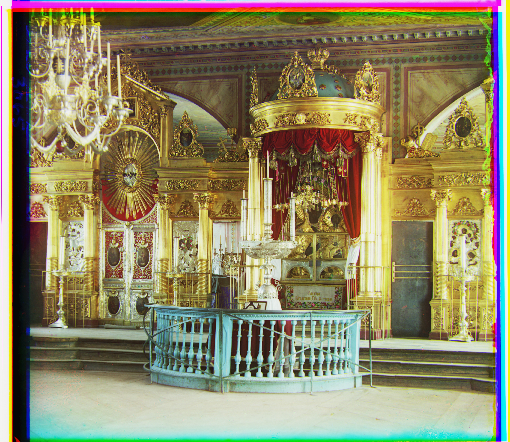
G shift: (17, 42); R shift: (23, 90)
Ilem Selga

G shift: (7, 40); R shift: (11, 131)
Melons
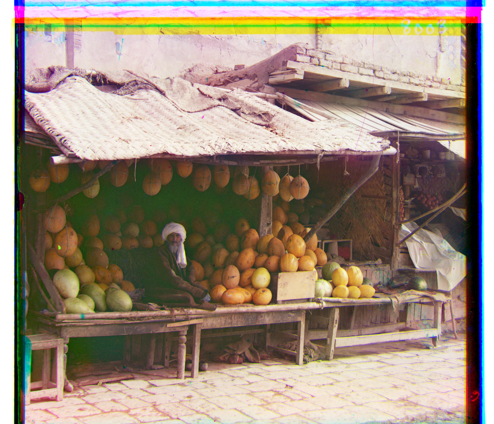
G shift: (10, 80); R shift: (13, 177)
Religious Painting
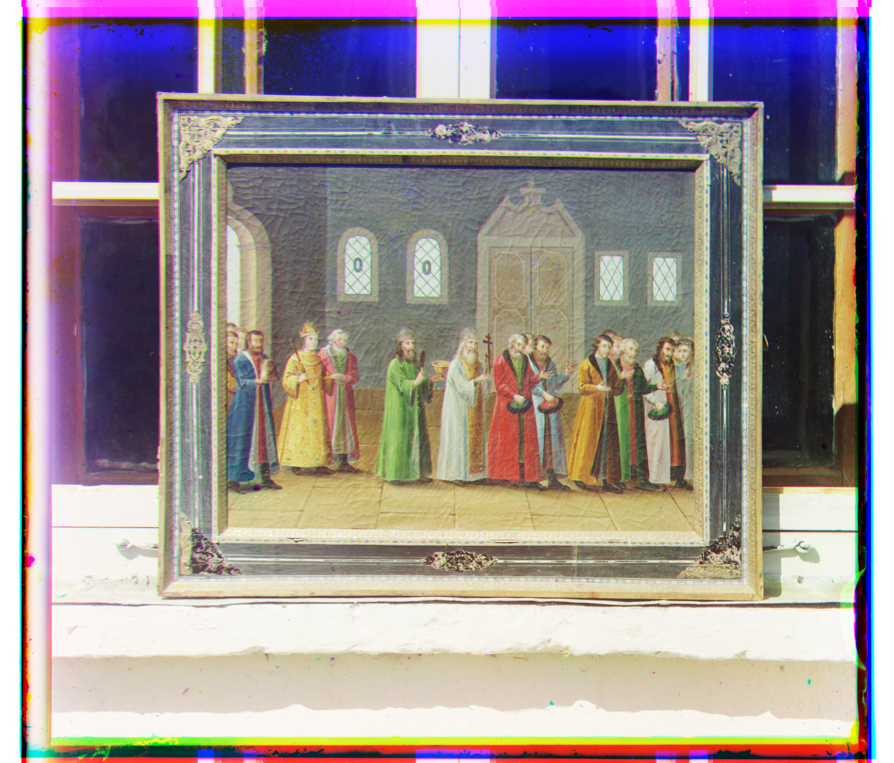
G shift: (6, 30); R shift: (6, 70)
Self Portrait

G shift: (29, 78); R shift: (37, 176)
Siren
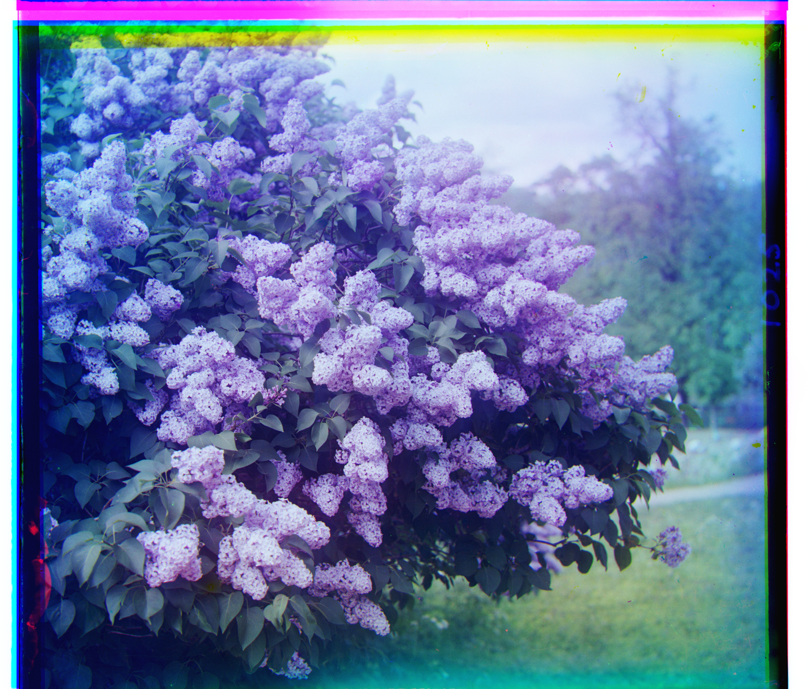
G shift: (-6, 49); R shift: (-24, 96)
Three Generations
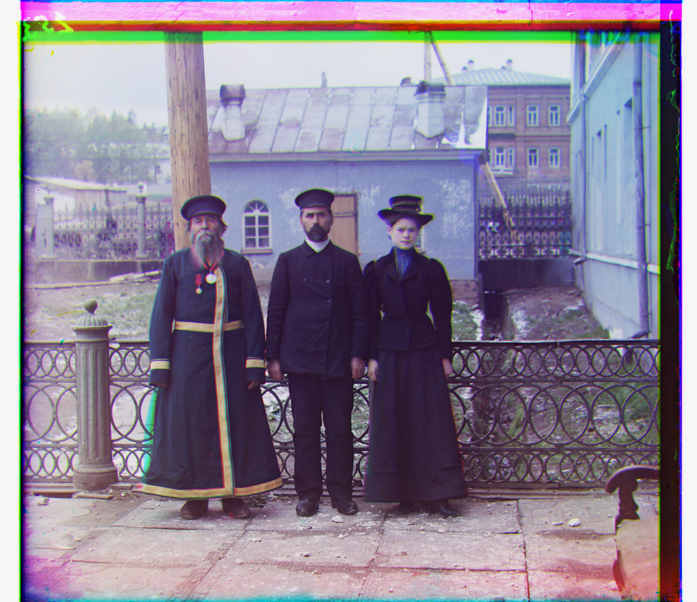
G shift: (12, 54); R shift: (9, 111)
Wharf

G shift: (-7, 15); R shift: (-16, 83)
Chosen Image 1
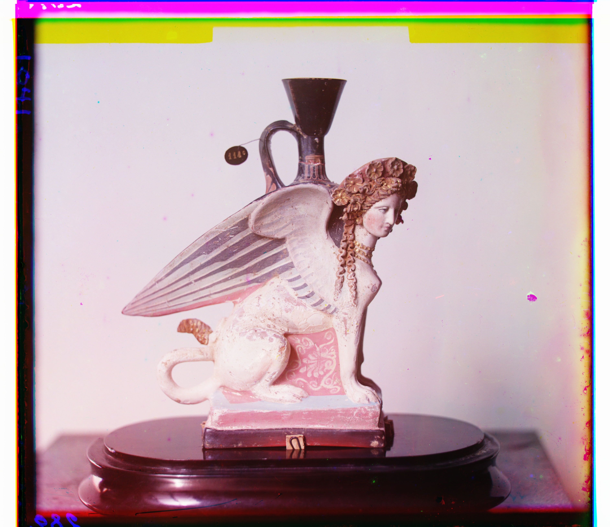
G shift: (-2, 24); R shift: (-2, 113)
Chosen Image 2
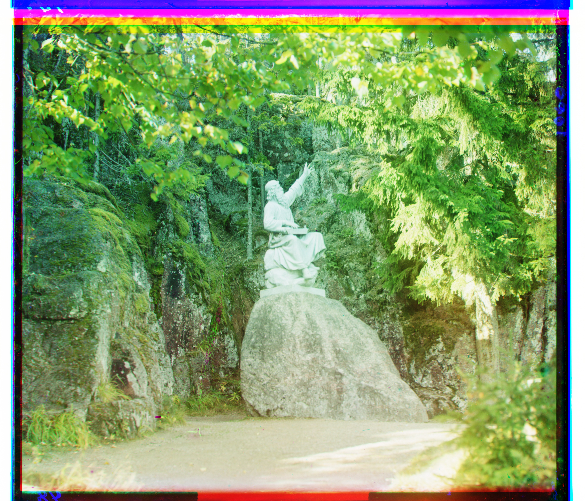
G shift: (3, 44); R shift: (2, 164)
Chosen Image 3
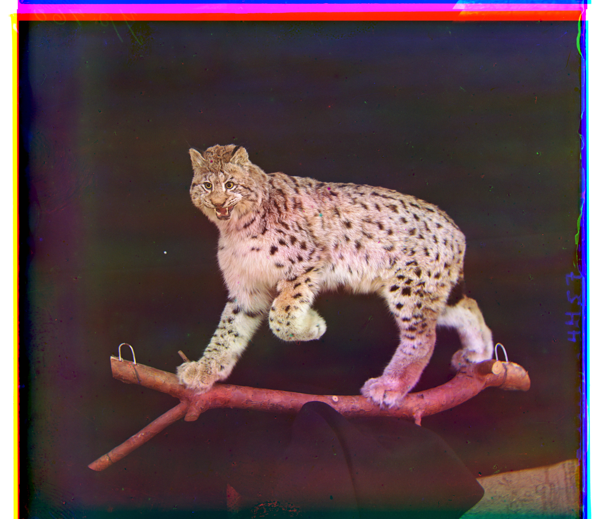
G shift: (21, 58); R shift: (27, 129)